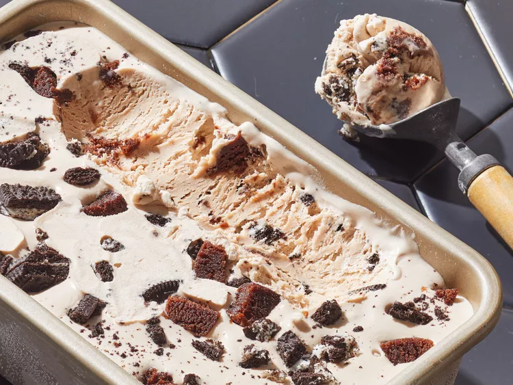

Home
Vanilla Ice Cream

You just need to use an electric mixer to fluff up whipped cream, then fold that
into a mixture of sweetened condensed milk and vanilla. Then all that's left to do
is freeze the sweet vanilla ice cream until hardened - about five hours.
Ingredients
- 1 ½ cups whipping cream
- 1 (14 ounce) can sweetened condensed milk
- 1 tablespoon vanilla extract
Directions
- Beat cream in a chilled glass or metal bowl with an electric mixer until
stiff peaks form.
- Mix condensed milk and vanilla extract together in a bowl. Fold in
whipped cream with a spatula until just combined. Pour into a freezer-safe
container. Freeze until completely frozen, 5 to 8 hours.